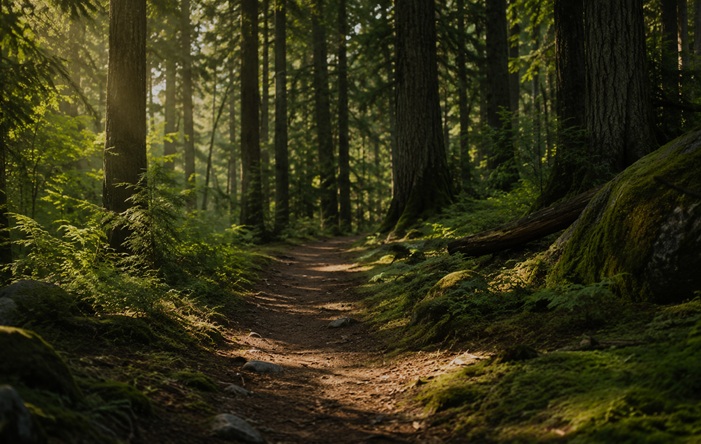
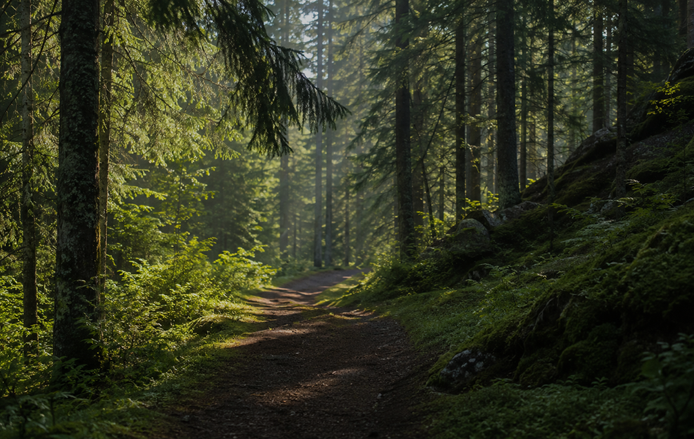
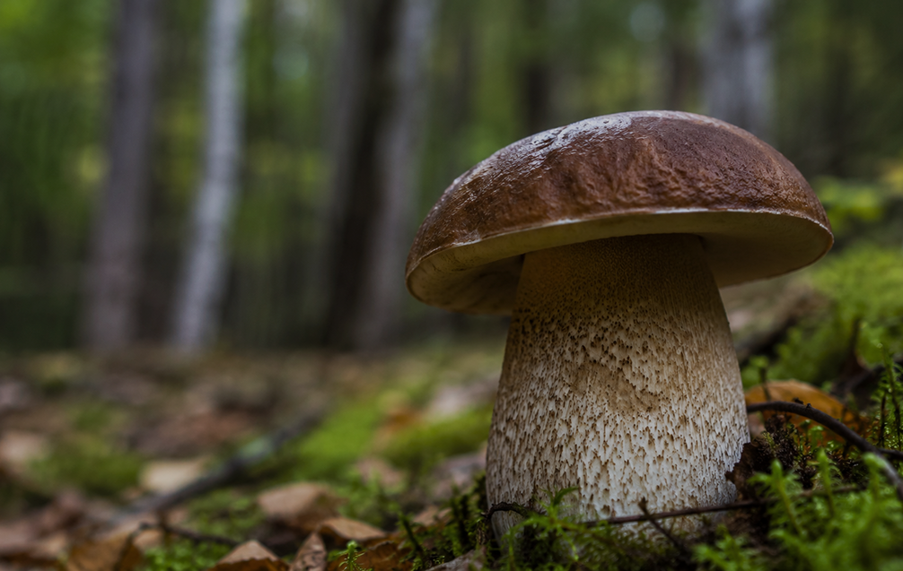

Лесной экзамен
Проверь, насколько уверенно
ты чувствуешь себя в лесу

Помощь на тропе
Тест о спокойных действиях, внимании
к самочувствию и простых решениях
Съедобное или... нет?
Что взять с собой?

навигация
Спокойное движение
Тест о внимательности, маршрутах
и спокойном движении по лесу

микология
Наблюдение за грибами
Небольшой тест о грибах,
влажности и лесной среде

экипировка
Что взять в лес
О простых вещах, которые делают
прогулку по лесу спокойнее и удобнее
навигация
Чтение маршрута
Ориентиры, тропы и внимание
к деталям лесной среды